About The Film
Synopsis — 'Blowing Out The Candles' is a 7-minute psychological thriller that follows Maisie at her 18th birthday party. What should be a joyful celebration transforms into an uncertain psychological break as the boundary between perception and reality begins to blur. The film explores mental health challenges in young adults, specifically depicting how conditions like psychosis can distort social experiences and relationships.
Through Maisie's eyes, audiences witness the terrifying experience of questioning what is real and what exists only in her mind. As the party unfolds, visual and auditory distortions intensify, leaving both Maisie and viewers uncertain about what's actually happening.
Production Details — Co-written and co-directed with Annika Roberts, this film premiered at the S46 Showcase at Palace Electric Cinema on November 25, 2025. The production uses innovative visual storytelling techniques including lighting changes, sound distortion, and careful editing to place viewers directly into the protagonist's psychological state.
"Mental health representation in media is incredibly important, particularly for youth-targeted audiences, however it's often oversimplified," said co-director Amelia Bobbin. "We wanted to create something that honestly portrays the confusion and fear that can come with mental health issues."
The creative team made the deliberate decision to present the story only from Maisie's perspective, challenging audiences to experience the same confusion and uncertainty that she does. The project required extensive research into mental health representation to ensure responsible and accurate storytelling.
Official Poster
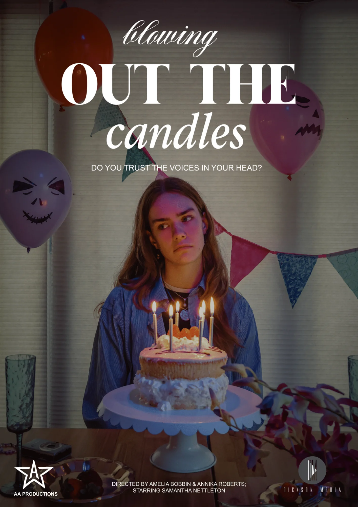
Watch The Trailer
Official Trailer — Experience a preview of "Blowing Out The Candles"0:44
Watch The Full Film
"Blowing Out The Candles" — Full film6:18
Production Stills
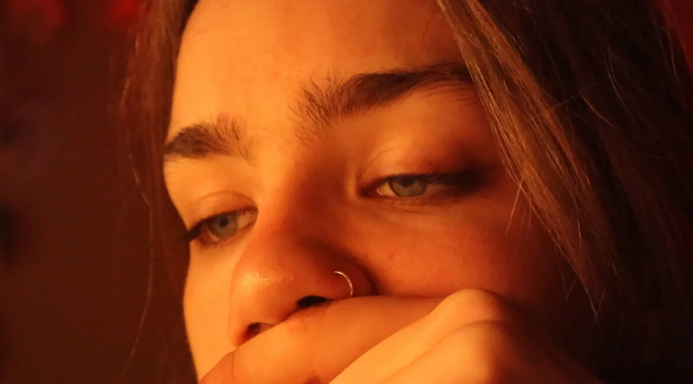
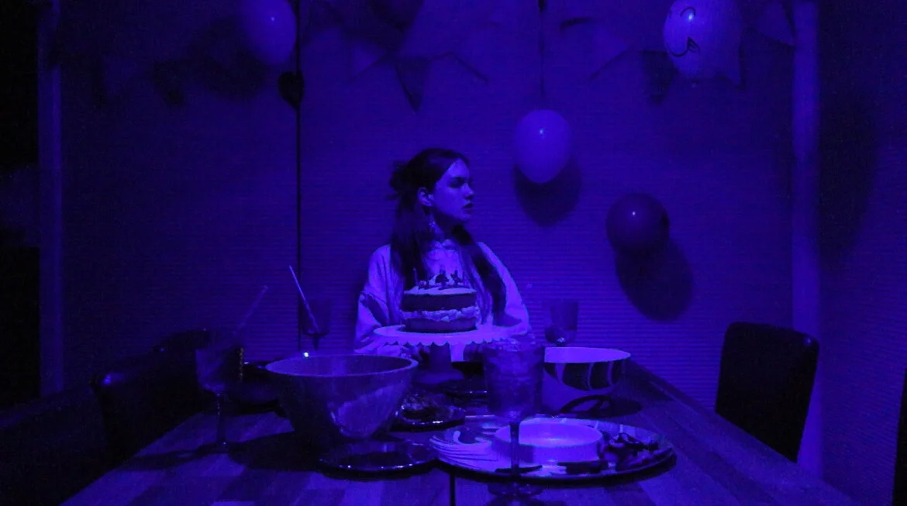
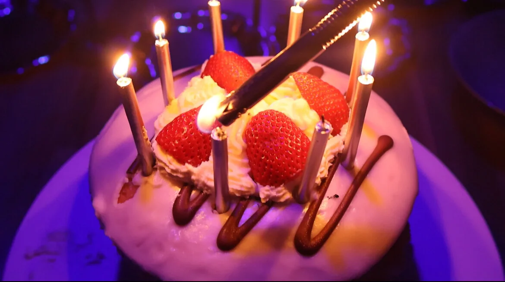
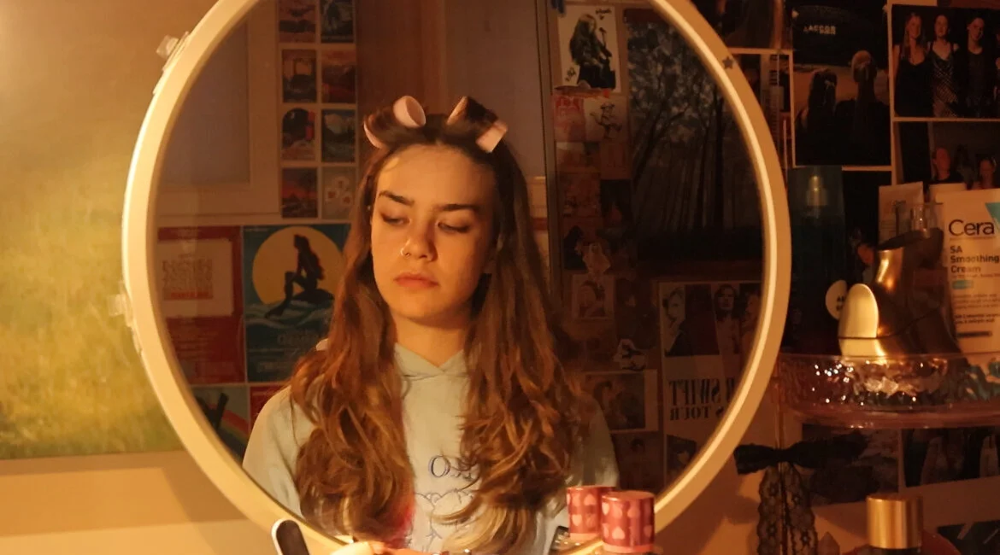
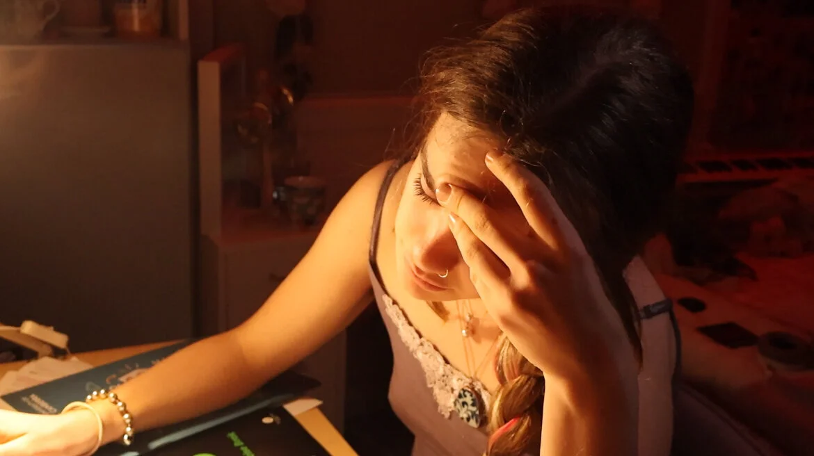
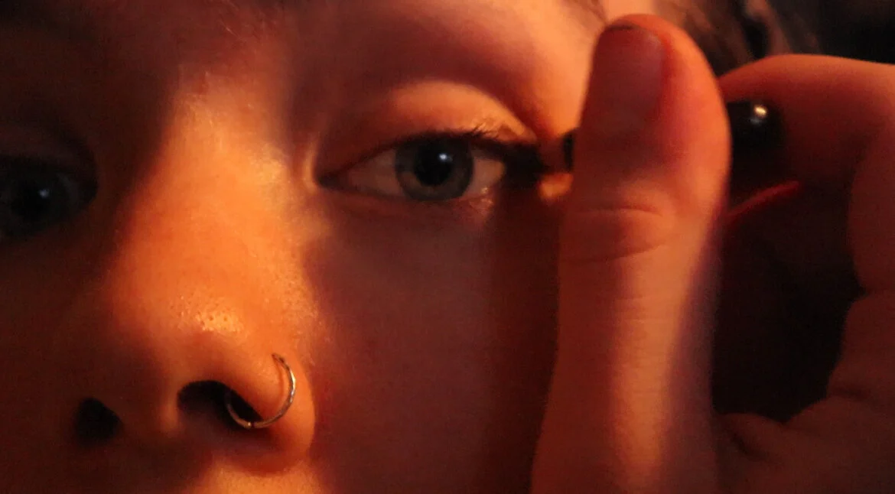
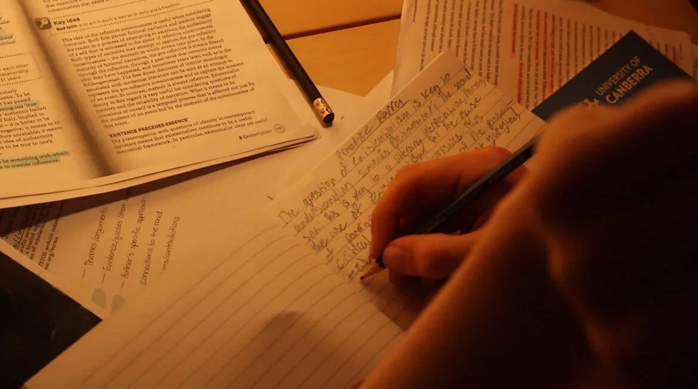
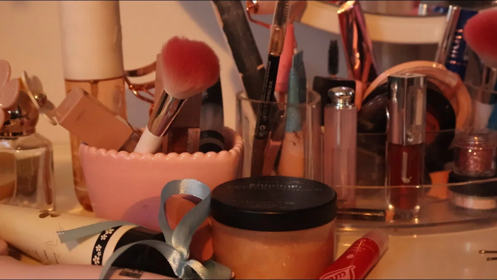
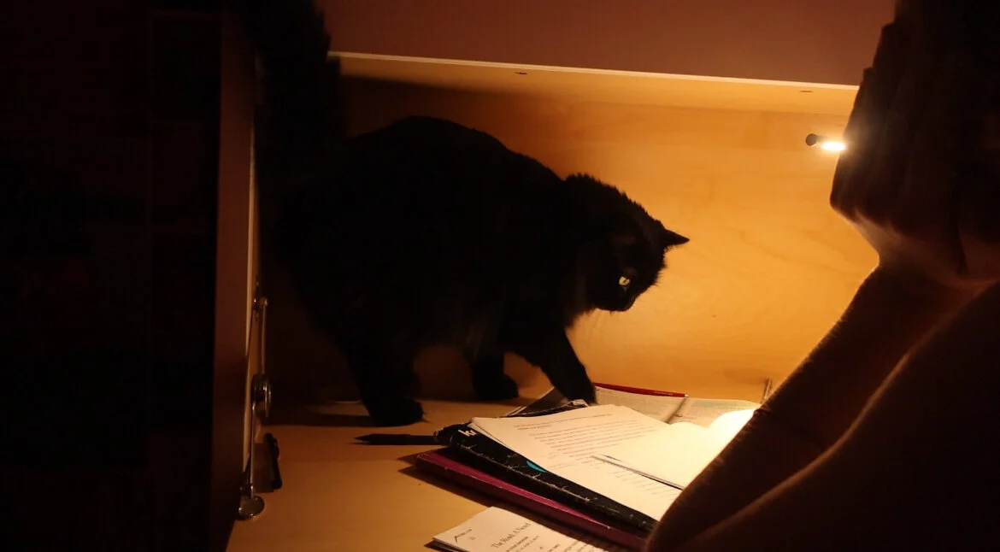
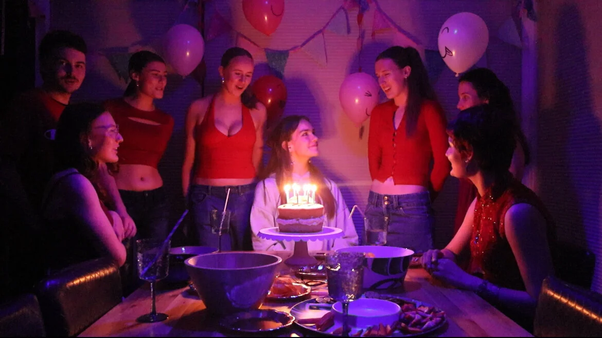
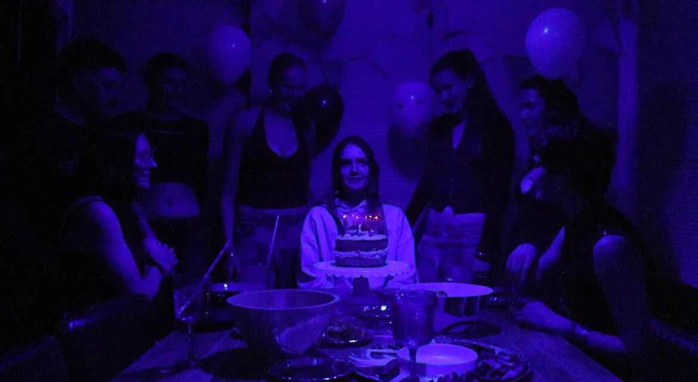
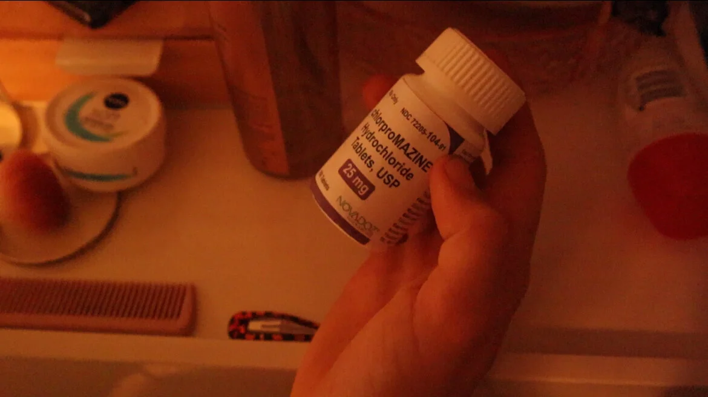